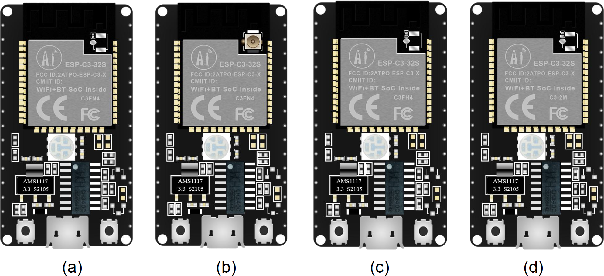
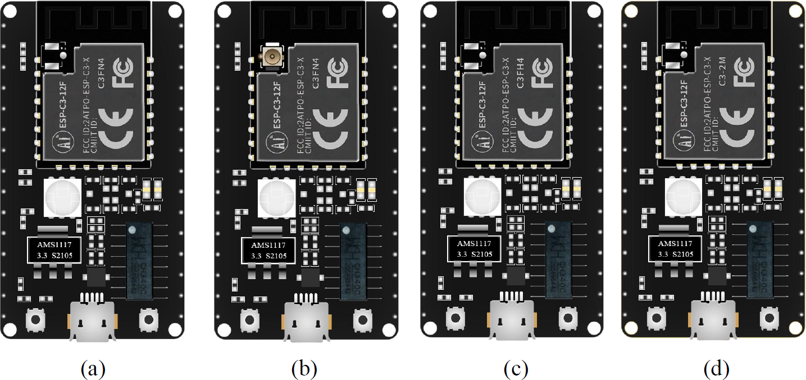
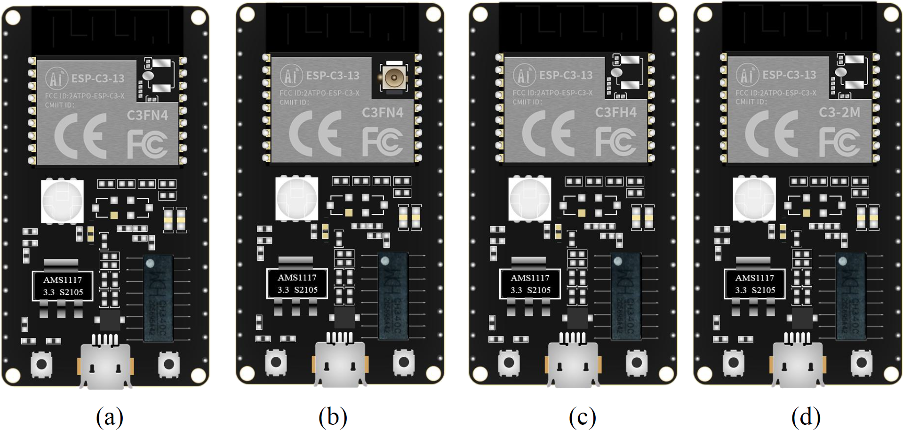
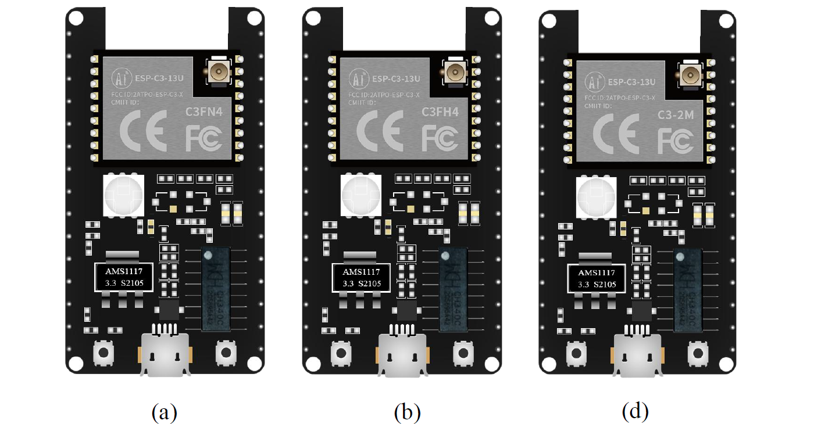
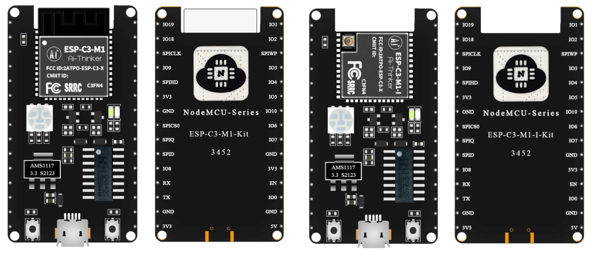
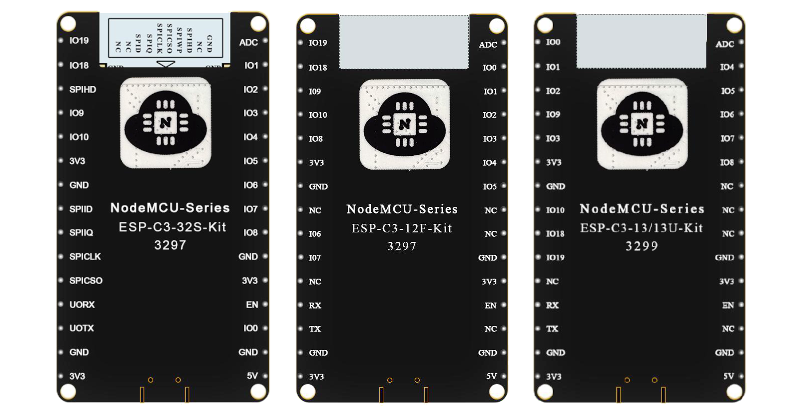

การเริ่มต้นใช้งานบอร์ด NodeMCU ESP32-C3 DevKits#
▷ Ai-Thinker NodeMCU ESP32-C3 Boards#
บทความนี้กล่าวถึง การใช้งานบอร์ดไมโครคอนโทรลเลอร์ ESP32-C3 Kits ของบริษัท Shenzhen Ai-Thinker Technology Co., Ltd. ที่ใช้ชิป Espressif ESP32-C3 (32-bit single-core RISC-V, 160MHz) เป็นตัวประมวลผลหลักและรองรับการสื่อสารข้อมูลไร้สาย 2.4GHz Wi-Fi (IEEE 802.11b/g/n) และ Bluetooth / BLE 5.0
→ แนะนำให้อ่านบทความที่เกี่ยวข้อง: การเริ่มต้นใช้งานชิป ESP32-C3 (RISC-V CPU Core)
บอร์ด NodeMCU ESP32-C3 Kits มีหลายแบบให้เลือกใช้งาน เช่น
- ESP-C3-32S-Kit
- ใช้โมดูล ESP-C3-32S (SMD-38 package) ของ Ai-Thinker
- มีไอซีทรานซิสเตอร์ NPN สองตัว สร้างสัญญาณควบคุมที่ขา EN / RST และ BOOT / GPIO-9 สำหรับการรีเซตการทำงานผ่าน USB-to-Serial
- ESP-C3-12F-Kit
- ใช้โมดูล ESP-C3-12F (SMD-22 package) ของ Ai-Thinker
- บนแผ่น PCB ไม่มีการบัดกรีไอซีทรานซิสเตอร์ NPN สำหรับการรีเซต
- ESP-C3-13-Kit / ESP-C3-13U-Kit
- ใช้โมดูล ESP-C3-13 / ESP-C3-13U (SMD-18 package) ของ Ai-Thinker
- บนแผ่น PCB ไม่มีการบัดกรีไอซีทรานซิสเตอร์ NPN สำหรับการรีเซต
- ESP-C3-13U-Kit มี IPEX connector เพื่อต่อกับสายอากาศภายนอกเท่านั้น และไม่มีสายอากาศแบบ PCB antenna ให้เลือกใช้งาน
- ESP-C3-M1-Kit (PCB antenna) / ESP-C3-M1-I-Kit (IPEX connector)
- ใช้โมดูล ESP-C3-M1 / ESP-C3-M1-I (SMD-61 package) ของ Ai-Thinker
บอร์ด NodeMCU ESP-C3-Kits อาจแบ่งได้เป็น 4 ตัวเลือกย่อย ดังนี้
- (a) C3FN4 + PCB antenna
- (b) C3FN4 + IPEX connector
- (c) C3FH4 + PCB antenna
- (d) C3-2M + IPEX connector

รูป: NodeMCU ESP-C3-32S-Kit

รูป: NodeMCU ESP-C3-12F-Kit

รูป: NodeMCU ESP-C3-13-Kit

รูป: NodeMCU ESP-C3-13U-Kit

รูป: NodeMCU ESP-C3-M1-Kit / ESP-C3-M1-I-Kit
หากเปรียบเทียบบอร์ดในมุมมองจากด้านหลัง (Bottom View) จะเห็นตำแหน่งของขาต่าง ๆ บางขามีข้อความ NC เขียนกำกับไว้ ซึ่งหมายถึง ขาดังกล่าวไม่ได้ต่อใช้งาน

รูป: เปรียบตำแหน่งขาของบอร์ด 3 รุ่น
บอร์ด Ai-Thinker ESP-C3 Kits มีคุณสมบัติดังนี้
- โมดูลมีชิป ESP32-C3 เป็นตัวประมวลผลหลัก และมีหน่วยความจำภายในแบบแฟลช (built-in Flash) ขนาด 4MB
- มีให้เลือกใช้งาน 4 แบบ ซึ่งขึ้นอยู่กับโมดูลของ Ai-Thinker ที่มีอยู่บนบอร์ด และมีความแตกต่างกัน เช่น
- ใช้สายอากาศแบบ PCB (onboard) antenna หรือ IPEX (external) antenna
- ใช้ชิป ESP32-C3 เป็นเวอร์ชันปรกติ (C3FN4: normal version) หรือเวอร์ชันที่ทนความร้อนได้สูงขึ้น (C3FH4: high temperature version)
- ชิปทุกรุ่น มีหน่วยความจำภายในแบบแฟลช 4MB ยกเว้นรุ่น C3-2M ใช้ชิปแฟลชภายนอกขนาด 2MB
- สามารถนำมาต่อวงจรบนเบรดบอร์ดได้ เนื่องจากมีขาแบบตัวผู้ (Male Pin Headers)
- ขาทั้งหมด 2x15 ขา (แต่บางขา เป็น NC=Not Connected) แบ่งเป็นแถว อยู่ด้านข้าง แถวละ 15 ขา ระยะห่างของขาเท่ากับ 2.54mm
- มีชิป CH340C USB-to-Serial (รองรับความเร็วได้ถึง 4608000 baudrate) เชื่อมต่อกับคอนเนกเตอร์ MicroUSB
- มีไอซี RGB LED (5050 SMD package) และควบคุมด้วยขา IO3=Red, IO4=Green และ IO5=Blue ตามลำดับ
- มีวงจร White LED จำนวน 2 ชุด และควบคุมด้วยขา IO18=Cool-White และ IO19=Warm-White ตามลำดับ
- มีปุ่มรีเซต RESET / EN และปุ่ม BOOT / GPIO-9 ทำงานแบบ Active-low
- มีไอซีควบคุมแรงดันคงที่ AMS1117-3.3V เพื่อแปลง +5V / VUSB (ต่อผ่านตัวไดโอด 1N5819) ให้เป็น +3.3V สำหรับเอาต์พุต (จ่ายกระแสได้อย่างน้อย 500mA)
- ขาที่เกี่ยวข้องกับการใช้งาน Embedded SPI Flash ภายในชิป ได้แก่ SPIWP, SPID, SPIQ, SPICS0, SPIHD, SPICLK (มีทั้งหมด 6 ขา)
▷ ไฟล์เอกสารอ้างอิง (.pdf)#
Ai-Thinker ESP32-C3 Series Modules (PDF files)
Ai-Thinker ESP32-C3 Kits (PDF files)
▷ กล่าวสรุป#
โมดูลและบอร์ดไมโครคอนโทรลเลอร์สำหรับนักพัฒนาที่ใช้ชิป Espressif ESP32-C3 ของบริษัท Ai Thinker เป็นตัวประมวลผลหลัก มีให้เลือกใช้งานหลายแบบ บทความนี้ได้นำเสนอรายละเอียดในเบื้องต้น เพื่อช่วยในการพิจารณาและเลือกใช้งานบอร์ดดังกล่าวตามความเหมาะสม
This work is licensed under a Creative Commons Attribution-ShareAlike 4.0 International License.
Created: 2022-07-25 | Last Updated: 2022-07-28